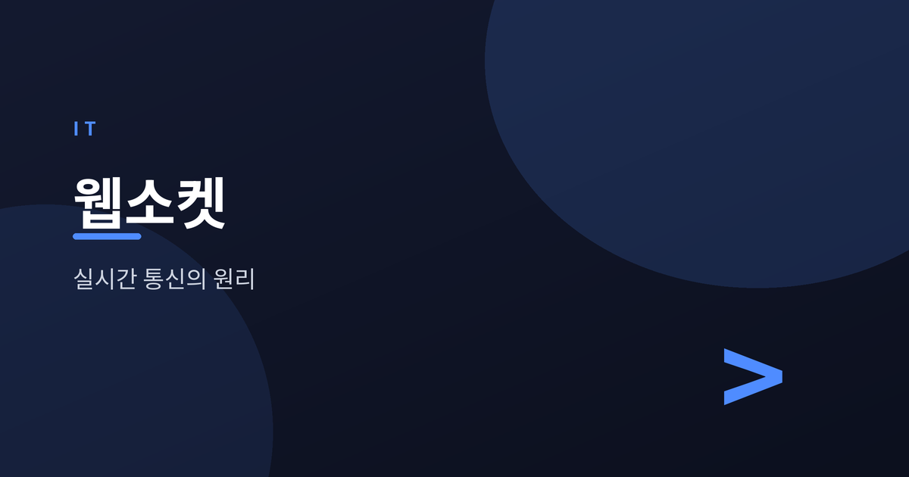
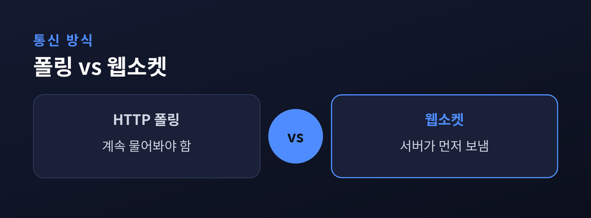
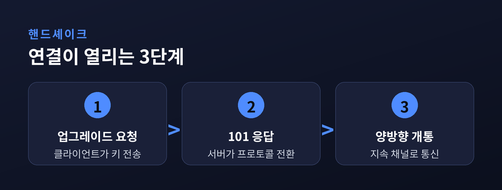
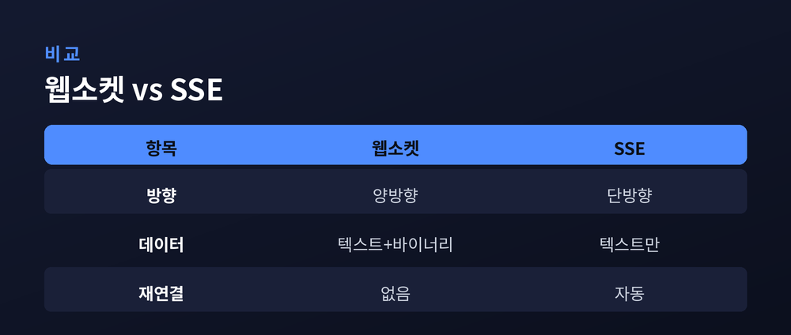
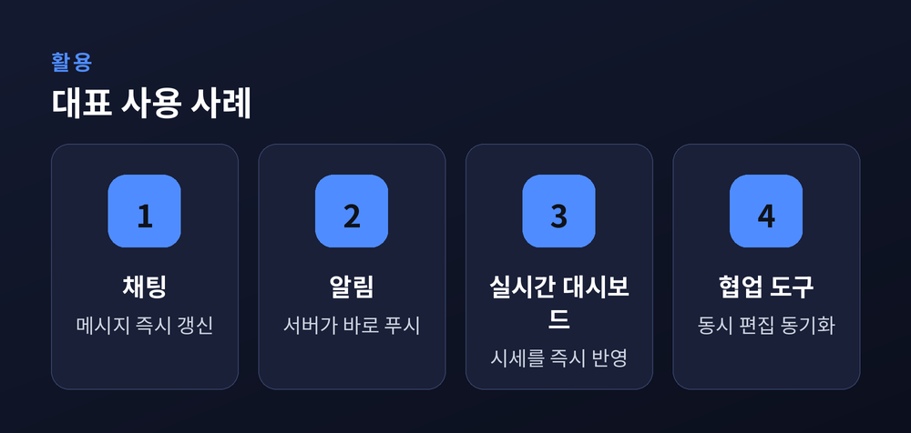

채팅과 알림은 어떻게 즉시 도착하나

채팅 앱에서 상대의 답장이 곧바로 뜨는 순간, 그 뒤에는 웹소켓이라는 기술이 있습니다. 오늘은 채팅과 알림이 어떻게 즉시 도착하는지, 그 원리를 웹소켓을 중심으로 정리해 보겠습니다. 폴링과의 차이, 핸드셰이크, 프레임, SSE와의 비교, 그리고 한계와 확장까지 차근차근 짚어 보겠습니다.
먼저 결론부터 말씀드리면 이렇습니다. 웹소켓은 서버와 브라우저 사이에 한 번 연결을 열어두고, 양쪽이 원할 때 데이터를 주고받는 통로입니다. 그래서 서버가 먼저 말을 걸 수 있고, 알림이 지체 없이 도착합니다.
전통적인 HTTP는 "요청하고 응답받는" 구조로 만들어졌습니다. 클라이언트가 묻고, 서버가 답합니다. 즉, 먼저 말을 걸 수 있는 쪽은 언제나 클라이언트였습니다. 서버가 스스로 새 소식을 밀어 보낼 방법이 없었습니다.
그래서 나온 것이 폴링입니다. 클라이언트가 일정 간격으로 "새 소식 있나요?"를 반복해 묻는 방식입니다. 이메일함을 몇 분마다 새로고침하는 모습과 같습니다. 문제는 바뀐 것이 없어도 계속 물어본다는 점입니다. "새 것 없음"이라는 빈 응답이 낭비되고, 매 요청마다 HTTP 헤더 전체가 따라붙어 트래픽이 불어납니다.
이를 조금 개선한 것이 롱 폴링입니다. 서버가 즉시 답하지 않고, 줄 것이 생길 때까지 연결을 열어둔 채 기다렸다가 응답합니다. 업데이트가 폴링 간격을 기다리지 않고 거의 즉시 도착한다는 장점이 있습니다. 다만 매 요청마다 여전히 수백 바이트의 HTTP 헤더가 붙습니다.
예전엔 클라이언트가 쉬지 않고 물어봐야 했습니다. 지금은 서버가 알아서 말을 겁니다. 이 전환의 중심에 웹소켓이 있습니다.

웹소켓은 하나의 TCP 연결 위에서 양방향 통신을 가능하게 하는 기술입니다. 표준은 RFC 6455로 정의되어 있습니다. 여기서 양방향이란, 서버와 클라이언트가 각자 원할 때 데이터를 보낼 수 있다는 뜻입니다.
핵심은 연결이 한 번 맺으면 계속 살아 있다는 데 있습니다. 필요한 동안 통로가 열려 있고, 이후에는 오버헤드가 매우 작습니다.
주소 표기도 익숙합니다. `ws://`는 80번 포트, `wss://`는 443번 포트를 씁니다. 웹 트래픽을 허용하는 방화벽을 대체로 통과할 수 있는 이유입니다. 이 가운데 `wss`는 HTTPS와 같은 TLS 암호화를 써서, 중간에서 데이터를 가로채는 공격으로부터 통신을 보호합니다.
웹소켓 연결은 처음부터 특별한 것이 아닙니다. 평범한 HTTP 연결을 양방향 채널로 "업그레이드"하며 시작합니다.
절차는 세 걸음입니다. 클라이언트가 `Upgrade: websocket` 헤더와 무작위로 만든 `Sec-WebSocket-Key`를 담아 요청을 보냅니다. 서버는 HTTP 101 Switching Protocols로 응답하며, 그 키에서 파생한 `Sec-WebSocket-Accept` 값을 함께 돌려줍니다. 이때 서버는 클라이언트의 키에 정해진 고정 문자열(GUID)을 이어 붙이고, 그 결과를 SHA-1으로 해싱한 뒤 base64로 인코딩해 보냅니다.
이 악수가 성공하면 연결은 지속적인 양방향 채널로 바뀝니다. 이제 양쪽 모두 독립적으로, 언제든 데이터를 보낼 수 있습니다. 클라이언트만 교환을 시작할 수 있던 HTTP와 근본적으로 달라지는 지점입니다.

핸드셰이크 이후에는 더 이상 HTTP로 대화하지 않습니다. 양측은 가벼운 "프레임" 단위로 데이터를 주고받습니다. 프레임에는 텍스트, 바이너리, 그리고 제어용 프레임이 있습니다.
가벼움의 정도가 인상적입니다. 웹소켓은 프레임당 약 2바이트만 씁니다. 뒤에서 살펴볼 SSE가 메시지당 약 5바이트, 롱 폴링이 매번 수백 바이트의 헤더를 쓰는 것과 비교됩니다. 같은 데이터를 훨씬 적은 비용으로 나른다는 뜻입니다.
연결이 살아 있는지 확인하는 장치도 있습니다. Ping과 Pong이라는 제어 프레임입니다. 한쪽이 Ping을 보내면 상대는 같은 내용을 담아 되도록 빨리 Pong으로 답합니다. 이 제어 프레임은 페이로드가 최대 125바이트로 작고, 대개 브라우저나 서버 라이브러리가 알아서 처리합니다.
요청할 때마다 무거운 헤더를 짊어지던 시절을 지나, 이제는 2바이트짜리 가벼운 프레임이 오갑니다.
실시간이라고 해서 늘 웹소켓만 답은 아닙니다. 서버에서 클라이언트로 데이터를 흘려보내기만 하면 될 때는 SSE(Server-Sent Events)가 더 단순한 선택일 수 있습니다.

| 항목 | 웹소켓 | SSE |
|---|---|---|
| 방향 | 양방향 | 단방향(서버→클라이언트) |
| 데이터 | 텍스트+바이너리 | 텍스트만 |
| 자동 재연결 | 없음 | 있음 |
SSE는 라이브 피드, 알림, 실시간 대시보드처럼 서버가 일방적으로 보내는 상황에 잘 맞습니다. 자동으로 재연결되고, 대부분의 프록시와 방화벽을 특별한 설정 없이 통과합니다. 반대로 클라이언트도 서버로 무언가를 보내야 하는 대화형 상황, 예를 들어 채팅이나 협업 도구라면 웹소켓이 제격입니다.
우리가 매일 만나는 서비스 곳곳에 웹소켓이 들어 있습니다.
채팅과 메시징이 대표적입니다. 새 메시지, 입력 표시, 전송 확인, 접속 상태가 즉시 갱신됩니다. 알림과 피드도 그렇습니다. 서버가 경고나 상태 변화를 연결된 클라이언트에 곧바로 밀어 보냅니다.
실시간 대시보드에서는 주가, 시세, 스포츠 점수, 분석 지표가 화면에 지체 없이 반영됩니다. 순간의 판단이 중요한 트레이딩 플랫폼이 특히 이 방식을 씁니다. 여러 사람이 함께 문서를 편집하는 협업 도구도 마찬가지입니다. 동시에 편집해도 모두의 화면이 지연 없이 맞춰집니다.

웹소켓이 모든 것을 해결해 주지는 않습니다. 솔직히 짚어야 할 부분이 있습니다.
우선 웹소켓은 상태를 유지하는 연결이라, 자동 재연결이 내장되어 있지 않습니다. 연결이 끊겼을 때의 복구는 개발자가 직접 처리해야 합니다. 롱 폴링이 HTTP 오류로 눈에 띄게 실패하는 것과 달리, 웹소켓의 실패는 조용히 일어나서 따로 감지 장치가 필요합니다.
규모가 커지면 또 다른 숙제가 생깁니다. 서버가 여러 대일 때, 서버 1에 붙은 사용자가 보낸 메시지를 서버 2에 붙은 같은 방의 사용자에게 전하기가 까다롭습니다. 각 서버는 자기에게 연결된 사용자만 알기 때문입니다.
해법은 있습니다. 같은 사용자를 같은 서버에 고정하는 스티키 세션이 중간 규모의 출발점이 됩니다. 더 나아가면 Redis 같은 메시지 브로커를 중간에 두고, 한 서버가 받은 메시지를 다른 서버로 퍼뜨리는 방식을 씁니다. 참고로 Redis 기반 방식은 몇 대의 서버로 약 10만 동시 연결까지의 대부분 상황을 감당한다고 합니다.
정리하면 이렇습니다. 웹소켓은 한 번 연 통로를 계속 열어두어, 서버가 먼저 말을 걸 수 있게 만든 기술입니다. 폴링의 낭비를 걷어내고, 가벼운 프레임으로 데이터를 나릅니다.
— "채팅과 알림이 즉시 도착하는 비결은, 통로를 닫지 않는 데 있습니다."
다음에 메시지가 곧바로 뜨는 순간이 온다면, 그 뒤에서 조용히 열려 있는 연결 하나를 떠올려 보시면 좋겠습니다.